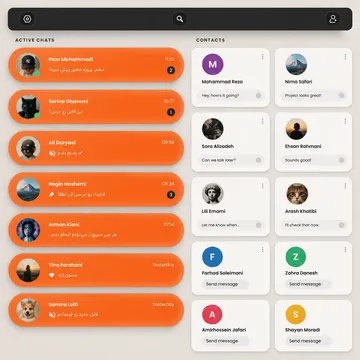

Readable once
The recipient can open a one-time message a single time. After that its content is gone, and only a trace remains that it was sent.
Case study
Rivo is a real-time chat app. It runs on Node.js and Socket.IO, so a conversation updates the instant a message is sent, and it keeps everything in PostgreSQL through Prisma.
It was built to fix four things ordinary messengers get wrong.
Most messengers show every conversation the same way: one long list, ordered by the last message. The friend you talk to every day sits in the same list as someone you have not heard from in a year, and you do the sorting in your head.
Rivo does it for you, with one rule: a conversation stays in Active chats as long as its last message has not been seen. A message waiting for you keeps it there, and so does one of yours they have not opened yet. Once the last message is seen and nobody replies, the conversation is over, and it moves to Contacts on its own. A new message brings it straight back.
A normal message is permanent and arrives the moment it is sent. Sometimes both are wrong: a password should not stay in a chat history forever, and a birthday note should not arrive a week early. And in most apps, an archived chat is still on your main screen, just inside a folder.
The recipient can open a one-time message a single time. After that its content is gone, and only a trace remains that it was sent.
A time capsule is written now and delivered locked. It opens by itself at the moment the sender chose.
Archiving in Rivo takes a chat off the main screen entirely. It is only reachable from Settings, so it stays out of sight until you go looking for it.
If a chat app's database is copied, the conversations in it usually go with it. Rivo uses envelope encryption: each message is locked with a data key, and that data key is locked again by a master key that never leaves HashiCorp Vault. The database only ever holds locked data.
The server receives the plain text over the socket. It exists unencrypted only in memory, for as long as this request lasts.
The message body is encrypted with a data key, turning it into ciphertext that is meaningless on its own.
The data key is sent to Vault and encrypted with a master key. The master key never leaves Vault.
PostgreSQL stores the ciphertext next to the wrapped key. Reading a message runs the same steps in reverse.
6f1c09e4a7b3…d25eZk9QbTRnc1ZyN…hQ2x3A copy of this table on its own reveals nothing. Reading it needs Vault.
